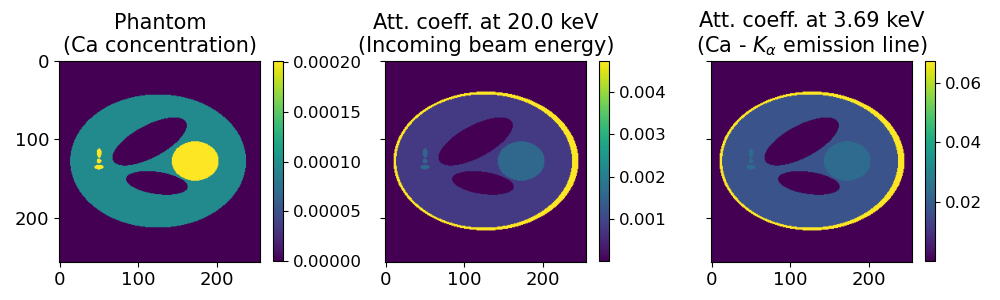
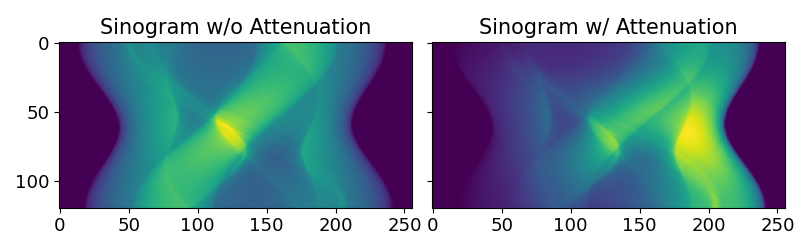
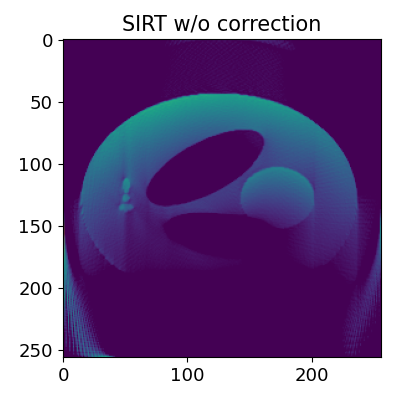
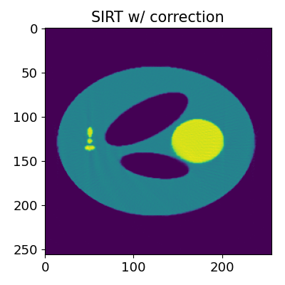
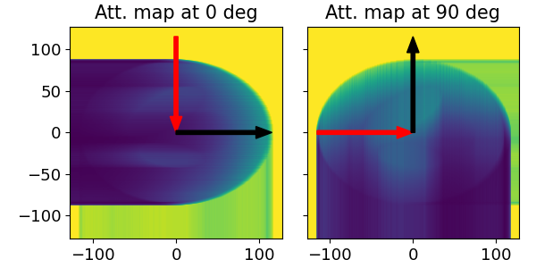

Attenuation correction
In this tutorial, we show how to use corrct’s attenuation correction functions.
We first create a synthetic test case, as the one presented in:
N. Viganò and V. A. Solé, “Physically corrected forward operators for induced emission tomography: a simulation study,” Meas. Sci. Technol., no. Advanced X-Ray Tomography, pp. 1-26, Nov. 2017.
Synthetic data creation
We can create the phantom and the local attenuation coefficient maps for the incoming beam and emitted photon energies with the following code:
try:
import phantom
except ImportError:
cct.testing.download_phantom()
import phantom
vol_shape = [256, 256, 3]
ph_or = np.squeeze(phantom.modified_shepp_logan(vol_shape).astype(np.float32))
ph_or = ph_or[:, :, 1]
ph, vol_att_in, vol_att_out = cct.testing.phantom_assign_concentration(ph_or)
These are the resulting images:

out_energy = cct.physics.xrf.get_energy("Ca", "KA", compute_average=True)
fig, axs = plt.subplots(1, 3, sharex=True, sharey=True, figsize=(10, 3))
im = axs[0].imshow(ph)
axs[0].set_title("Phantom\n(Ca concentration)", fontsize=15)
cbar = plt.colorbar(im, shrink=0.83)
cbar.ax.tick_params(labelsize=12)
im = axs[1].imshow(vol_att_in)
axs[1].set_title(f"Att. coeff. at {20.0:.3} keV\n(Incoming beam energy)", fontsize=15)
cbar = plt.colorbar(im, shrink=0.83)
cbar.ax.tick_params(labelsize=12)
im = axs[2].imshow(vol_att_out)
axs[2].set_title(f"Att. coeff. at {out_energy:.3} keV\n(Ca - $K_\\alpha$ emission line)", fontsize=15)
cbar = plt.colorbar(im, shrink=0.83)
cbar.ax.tick_params(labelsize=12)
for ax in axs:
ax.tick_params(labelsize=13)
fig.tight_layout()
Where the first on the left, is the local mean XRF photon production of the \(K_{\alpha}\) emission line of Ca, the second is the local linear attenuation for the incoming beam (at 20 keV), and the last one is the local linear attenuation for the emitted photons (at 3.69 keV). It should be noted that the local linear attenuations used here are the result of \(\mu \cdot d\), where \(d\) is the voxel size, and \(\mu\) the local linear attenuation coefficient at the respective given energies.
We then create a sinogram with the following function:
sino, angles_rad, expected_ph, _ = cct.testing.create_sino(ph, 120, vol_att_in=vol_att_in, vol_att_out=vol_att_out, psf=None)
Since the XRF detector is supposed to be on the right side of the sinogram, it will show strong attenuation effects on the side that is the most far away (left). Here below is a comparison against a non-attenuated sinogram.

fig, axs = plt.subplots(1, 2, sharex=True, sharey=True, figsize=(8, 2.5))
axs[0].imshow(sino_noatt)
axs[0].set_title("Sinogram w/o Attenuation", fontsize=15)
axs[1].imshow(sino)
axs[1].set_title("Sinogram w/ Attenuation", fontsize=15)
for ax in axs:
ax.tick_params(labelsize=13)
fig.tight_layout()
Computing local attenuation maps
Given the known sample composition, the local attenuation maps can be computed
with the following code, which is also used in the function
testing.phantom_assign_concentration:
volume_obj = physics.VolumeMaterial(materials_fractions, materials_compound_names, voxel_size_cm)
vol_lin_att_in = volume_obj.get_attenuation(in_energy_keV)
vol_lin_att_out = volume_obj.get_attenuation(out_energy_keV)
where materials_fractions is a list of volumes containing the local concentration
fraction of each material present in the sample volume, and materials_compound_names
is a list of compound names for each corresponding material. The function
get_attenuation of the volume_obj object is then used to compute the local
linear attenuation for the incoming and outgoing X-ray energies, as returned by
the function testing.phantom_assign_concentration.
Reconstruction
When proceeding to reconstruct with an uncorrected project as the following:
solver_sirt = cct.solvers.SIRT(verbose=True)
vol_geom = cct.models.get_vol_geom_from_data(sino)
with cct.projectors.ProjectorUncorrected(vol_geom, angles_rad) as p:
rec_sirt_uncorr, _ = solver_sirt(p, sino, iterations=250, lower_limit=0.0)
We obtain the following reconstruction:

If instead we use a corrected projector with the following code:
with cct.projectors.ProjectorAttenuationXRF(vol_geom, angles_rad, att_in=vol_att_in, att_out=vol_att_out) as p:
rec_sirt_corr, _ = solver_sirt(p, sino, iterations=250, lower_limit=0.0)
We obtain a corrected reconstruction:

The resulting reconstruction still shows some imperfections, but most of the aberrations have been corrected.
What happens behind the scenes
What the project projectors.ProjectorAttenuationXRF actually does is to compute local
attenuation maps for the pixels at each reconstruction angle.
This can be seen if we directly use the physics.attenuation.AttenuationVolume
class, instead of letting the projector call it for us:
att = cct.physics.attenuation.AttenuationVolume(
incident_local=vol_att_in, emitted_local=vol_att_out, angles_rot_rad=angles_rad
)
att.compute_maps()
Two of the maps computed with the physics.attenuation.AttenuationVolume.compute_maps method are shown here below:

fig, axs = plt.subplots(1, 2, sharex=True, sharey=True, figsize=(6, 3))
att.plot_map(axs[0], rot_ind=0)
axs[0].set_title("Att. map at 0 deg", fontsize=15)
att.plot_map(axs[1], rot_ind=60)
axs[1].set_title("Att. map at 90 deg", fontsize=15)
for ax in axs:
ax.tick_params(labelsize=13)
fig.tight_layout()
The red arrow indicates the incoming beam direction, while the black arrow indicates the XRF detector position with respect to the sample.
These maps can then be passed to the projector with the **att.get_projector_args() method:
with cct.projectors.ProjectorAttenuationXRF(ph.shape, angles_rad, **att.get_projector_args()) as p:
rec_sirt_corr, _ = solver_sirt(p, sino, iterations=250, lower_limit=0.0)